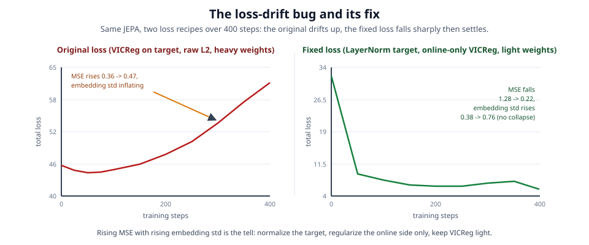
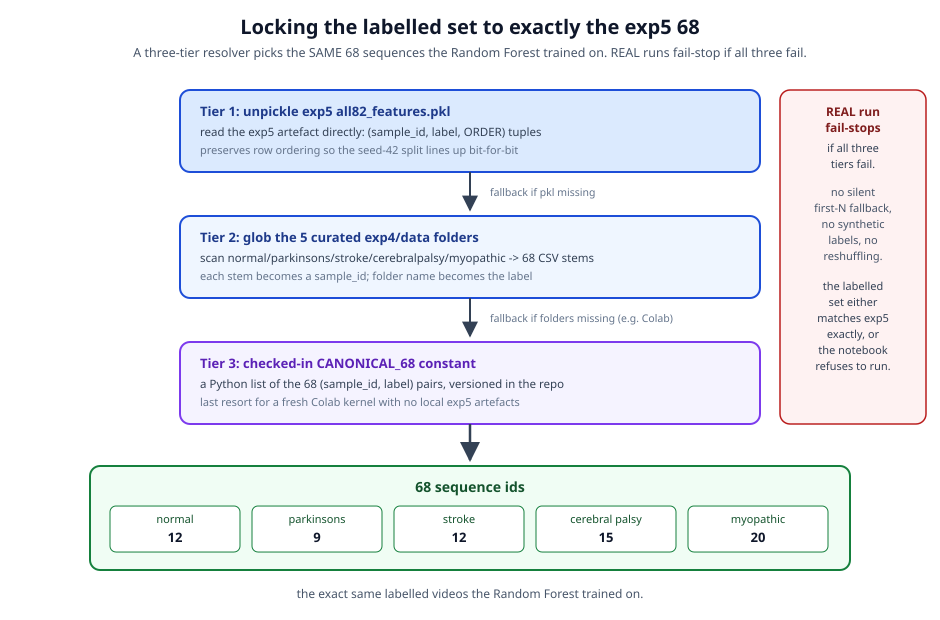
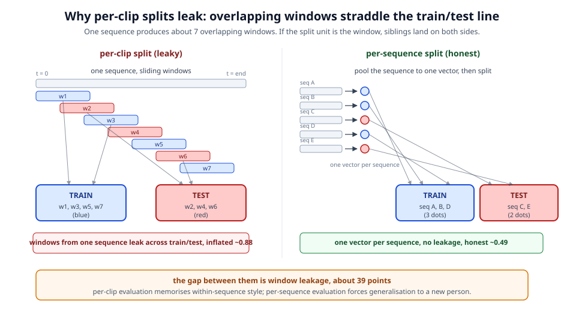
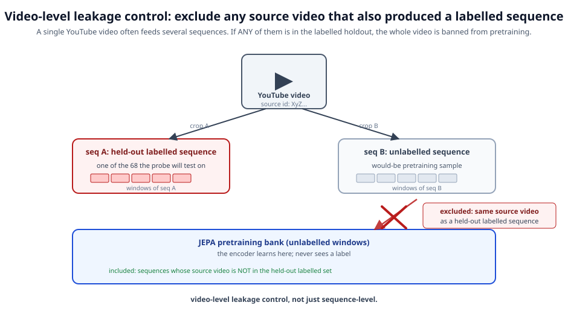
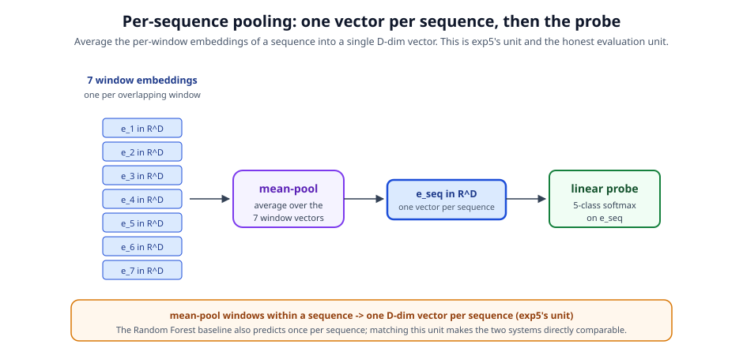
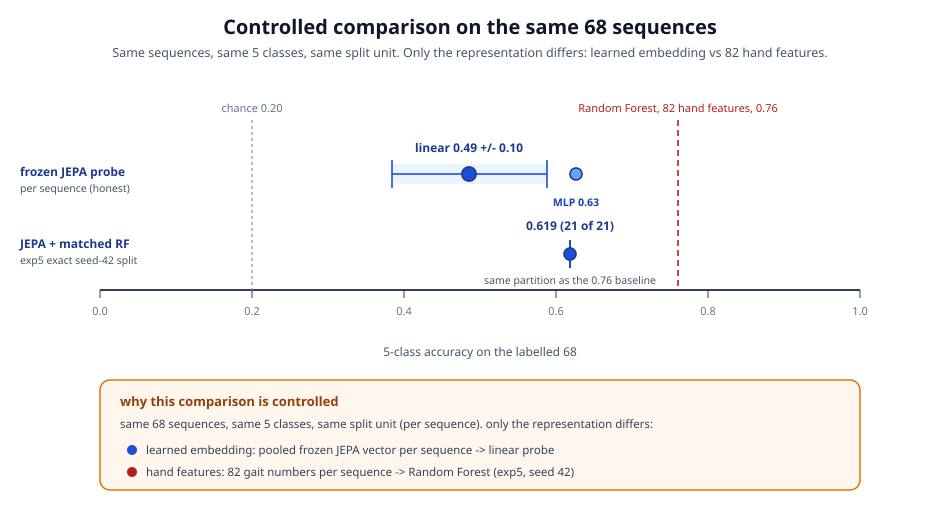
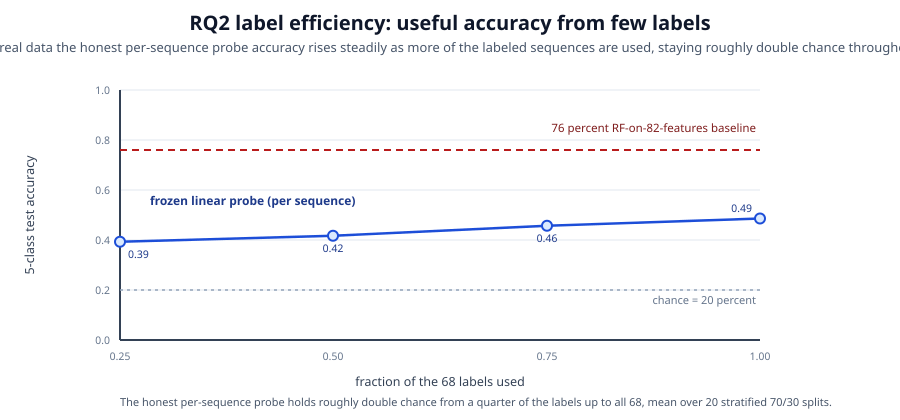
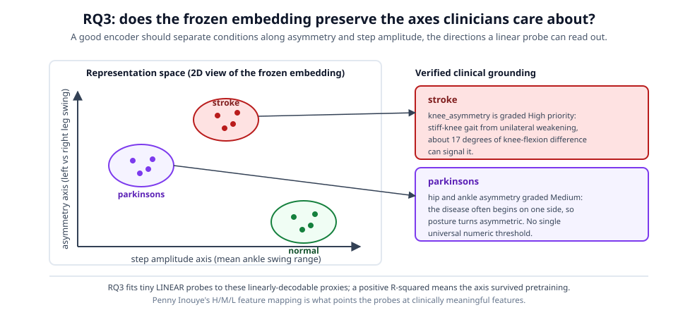
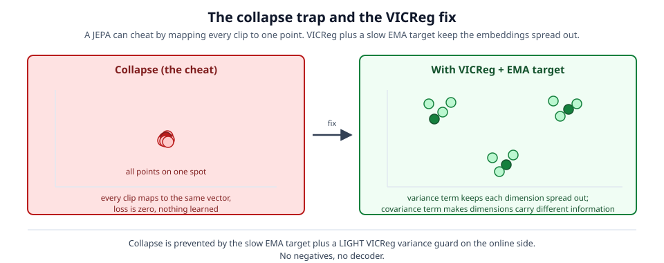

Gait-JEPA iteration 2
Learning gait from unlabelled walking video
A controlled comparison of a frozen pose-sequence JEPA against a hand-feature Random Forest, on the exact same 68 clinical sequences.
The thesis
Unlabelled walking video is cheap. Clinical labels are scarce.
- GAVD gives us 374 sequences across 11 gait conditions.
- Only 68 make up the clean 5-class set the prior work labelled.
- So: pretrain on all 374 with no labels, spend the 68 labels last on a tiny frozen probe.

Method
A JEPA on pose sequences, not pixels

Context encoder reads visible joints, EMA target encoder reads the full sequence, a predictor fills the hidden latent, VICReg keeps it from collapsing.
Method
A loss that stays down
- L2 between the prediction and the LayerNorm-normalized EMA target (direction, not magnitude).
- Light VICReg variance and covariance on the online context only, never the stop-gradient target.
- Without this the target scale inflates and the loss drifts up. With it: falls sharply then settles.

The baseline
The prior work: a Random Forest on 82 hand features
- Curated 5-class set of 68 sequences (normal 12, parkinsons 9, stroke 12, cerebralpalsy 15, myopathic 20).
- 82 hand-crafted joint-angle and kinematic features, one vector per sequence.
- Random Forest (100 trees, depth 5), single seed-42 70/30 split: 0.762 test accuracy (16 of 21). Chance is 0.20.
This is the number iteration 2 compares against, on exactly the same 68 sequences.
Why iteration 2
Iteration 1's comparison was not controlled
- Wrong set: labelled by first-N-per-class, not the exact exp5 68.
- Wrong unit: classified per overlapping window with a leaky split.
- Silent shrink: coverage fell to 42 of 68 with no flag.
- Mismatched probe: a different Random Forest than the baseline.
Each of these flatters or distorts the comparison. Iteration 2 fixes all four.
Fix 1
Lock the labelled set to the exact exp5 68

A three-tier resolver (pickle, folder glob, checked-in constant) with a REAL-mode fail-stop; canonical cerebralpalsy spelling threaded everywhere.
Fix 2
Evaluate per sequence, not per window

Per-clip splits let windows from one sequence sit in both train and test. Pooling to one vector per sequence removes the leak.
Fix 3
Exclude co-occurring videos from pretraining

A video can back more than one sequence. We drop from pretraining every window whose source video also backs a held-out labelled sequence.
The eval
One vector per sequence, matched probe

- Mean-pool a sequence's window embeddings to one D-dim vector.
- Probe with a linear model, an MLP, and a Random Forest matched to exp5 (100 trees, depth 5, balanced).
- Report a repeated-split band plus a like-for-like point on exp5's exact seed-42 split.
Result
The honest, controlled comparison

Per-sequence frozen probe 0.49 (linear) to 0.63 (MLP), exp5 exact-split matched RF 0.62, versus the Random Forest 0.76, on the same 68.
Result
Label efficiency: the real promise

How gracefully accuracy holds as labels shrink: 0.39 at 25 percent of labels up to 0.49 at full labels, staying roughly double chance throughout. A flatter curve is the payoff of pretraining.
Result
Did the encoder learn clinical axes on its own?
- Linear probes from the frozen latent to interpretable scalars: step amplitude is strongly recoverable (R-squared 0.68), asymmetry weakly (0.08) - a clinical axis learned with no labels.
- VICReg ablation: the online-only variance and covariance terms do real anti-collapse work on top of the EMA target (embedding spread 0.90 with, 0.74 without).


Limits and future work
What is honest, and what is next
- Small sample: 68 sequences, imbalanced (parkinsons only 9), high-variance test folds. Report bands, not points.
- Coverage: chased all 68 through download and extraction to 68 of 68 (two sequences needed a bbox-crop recovery and a relaxed length floor).
- Future (not this iteration): deeper or wider encoder, longer pretraining, richer inputs, stronger probe, to test whether the gap to 0.76 closes.
Iteration 2 is a rigor pass. The controlled harness it builds is what a model-upgrade iteration would stand on.
Takeaway
Learn first, label last, compare honestly
Same 68 sequences, same classes, same split unit. The only intended difference from the baseline is the representation: a learned embedding versus 82 hand features.
Notebooks, docs, and this deck live in gait/skeleton-jepa/gavd2. Iteration 1 is preserved in gavd/. For the plain-language story of the whole journey, see docs/learning/learning-journey.md.